Anacondaによる環境構築(Win)
2018/09/27
Windows10での環境構築をベースとします。 Linux系でも流れは同じはず…。
Anacondaのインストールからjupyter notebookでプログラムが書けるようになるまでの流れです。
インストール
Anacondaのページにいってぽちっとする。
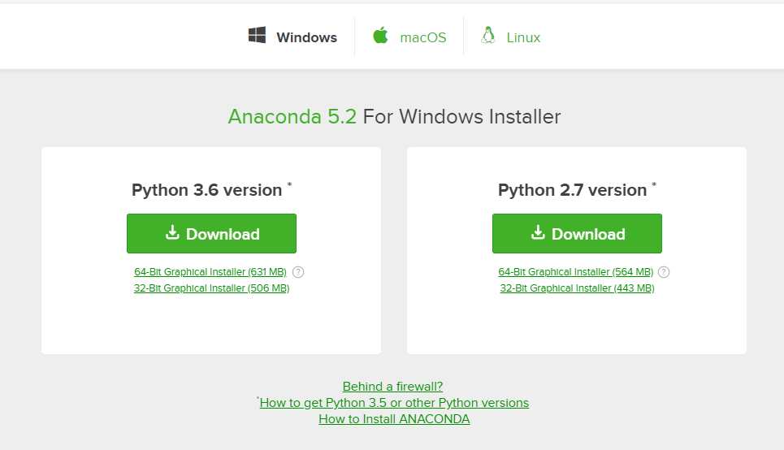
Anaconda3-5.2.0-Windows-x86_64.exe
をどこに保存されるか聞かれるのでわかるところに置いておく。
チートシートほしいならEメール登録してと言われるが無視。
入力場所じゃないところをクリックすると消える。
Anaconda3-5.2.0-Windows-x86_64.exe を実行する。
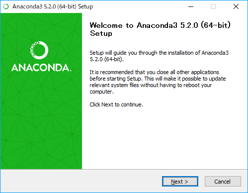
next ,I agree, next... と進めていく。
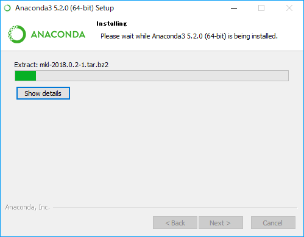
待機。
ゲージがたまったらnext
vsCodeが必要なければ、とりあえずskip
そのままfinishすると
http://docs.anaconda.com/anaconda/user-guide/getting-started/
と、
https://anaconda.org/
に飛ばされる。
anacondaの使い方（英語）とAnacondaクラウドの登録っぽいあれなので無視してもよい。
もしくはfinishする前にチェックを外しておく。
ここまででインストールは終了。
起動
スタートのアプリ覧を見ると、「最近追加されたもの」にAnaconda関連のものが加わっていることが分かる。
検索してもよい
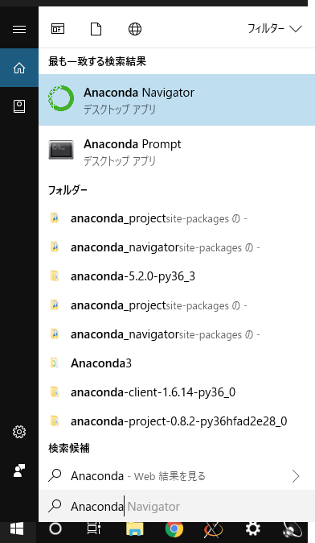
Anaconda Navigaterを起動する。
しばらく待って起動すると以下がでてくる。
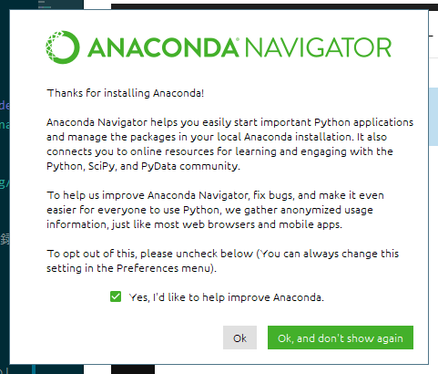
Ok, and don't show again する。チェックを外しても良い。
起動画面はこれ
jupyter notebookを Launch (起動)する。
ブラウザが立ち上がってjupyter notebookが起動する。
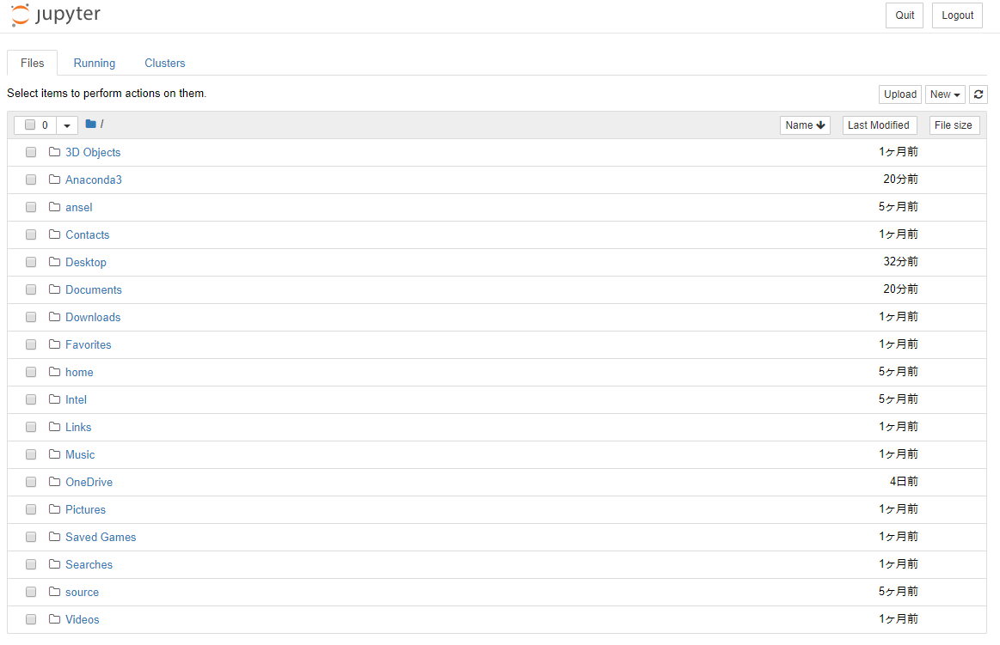
jupyterの基本
フォルダの作成
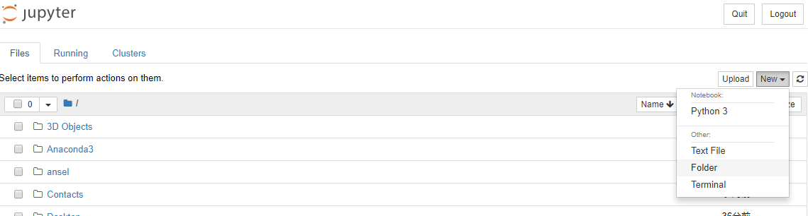
Folderをクリックすると、
新しく、Untitled Folder が作成される。
追加されたフォルダは一番上に追加されなるわけでもなく、追加しましたって通知がくるわけでもないので注意。
アルファベット順に見ていくと追加されているのが分かる。「U」 なので結構下の方にある。
フォルダのソート
右上のほうの Name LastModified などでソート順を変えることも可能。
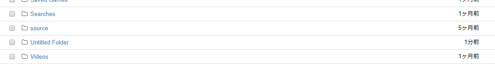
リネーム
フォルダ名の変更は左上の Rename から行える。
変更したいフォルダにチェックをうってから Rename をクリック。
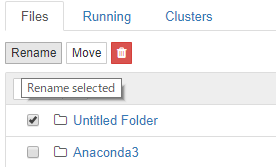
フォルダ名を入力し、右下のRename
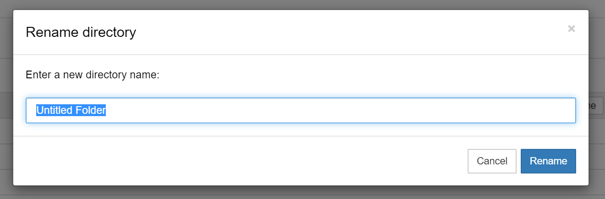
pythonファイルを書く
Pythonファイルをかき始めるには
右上の new から python3 を選択する。
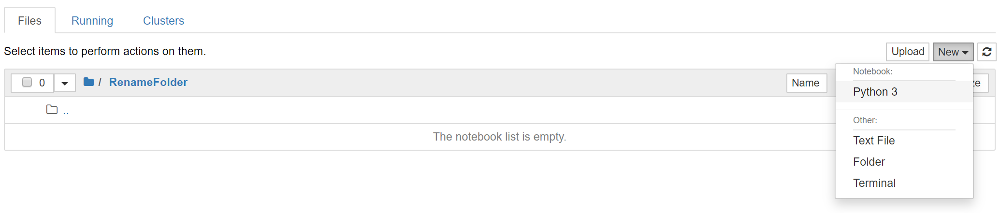
以下の画面が出てくる。
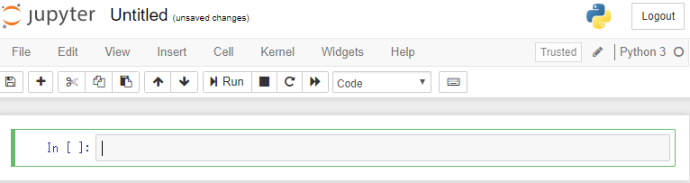
タイトルの変更はUntitledの場所をクリックすればよい。もしくはフォルダ名の変更と同様のやり方で行う。
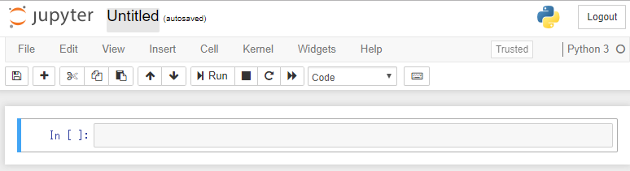
保存してあるpython notebook(.ipynb) を読み込む
右上のuploadをクリックする。
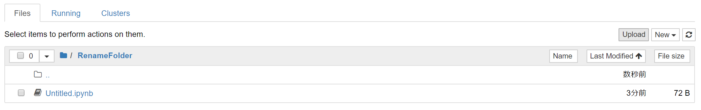
読み込みたいファイルを探し、開く。
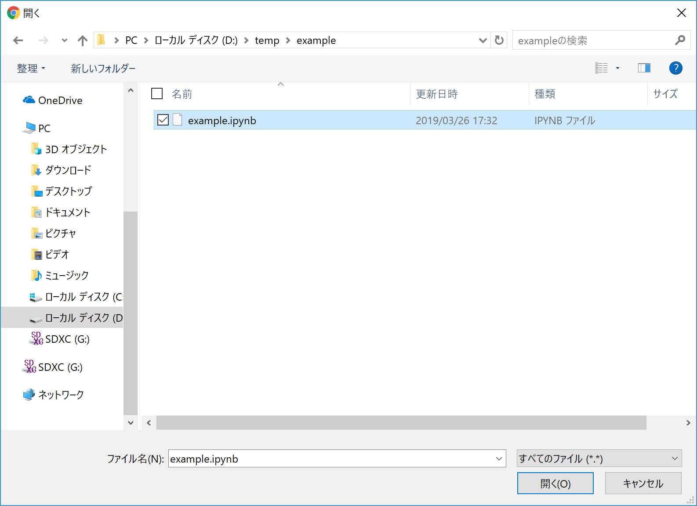
名前の変更も行える。
右の青いボタン（Upload ）をクリック。
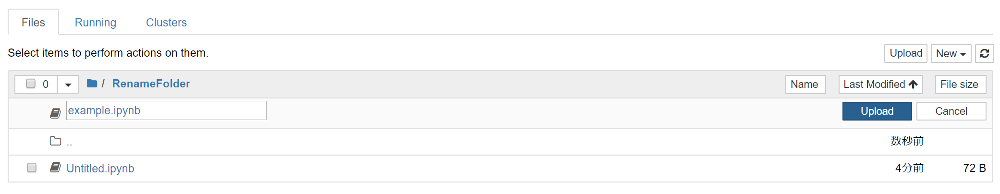
以上で追加される。
markdownの書き方
jupyter notebook上ではコメントを書くことができる。
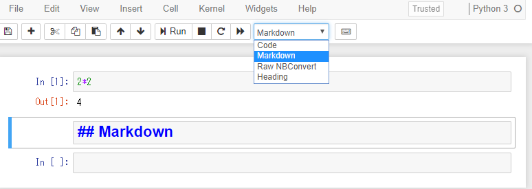